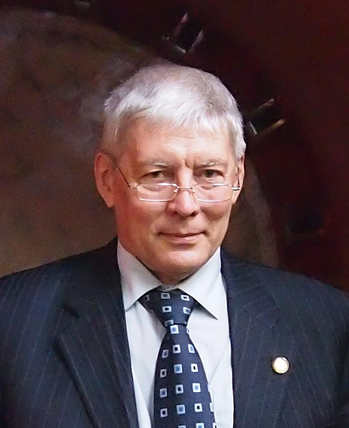
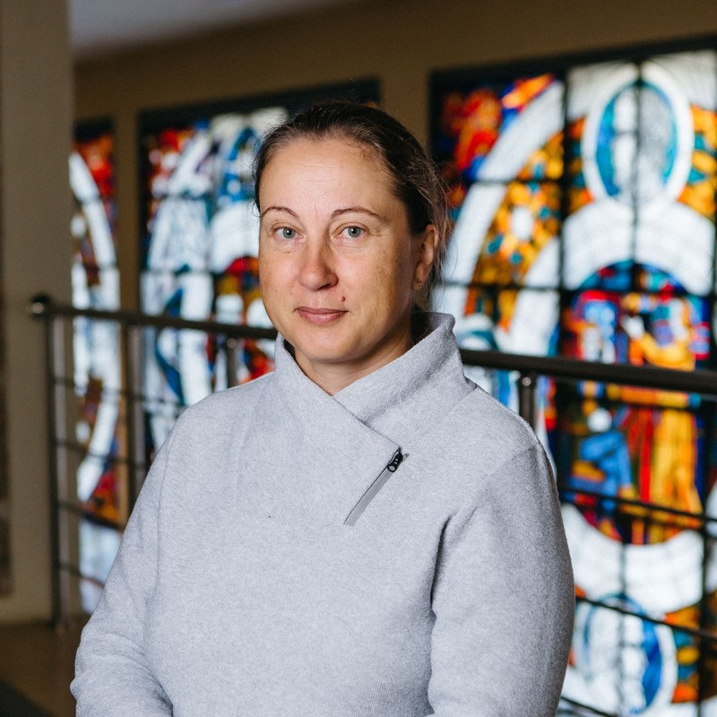

Сотрудники кафедры
Chair staff
Научные руководители, преподаватели и сотрудники лабораторий Института гидродинамики.
Academic supervisors, lecturers and researchers of the Institute of Hydrodynamics laboratories.

Пальчиков Евгений Иванович
Evgeny I. Palchikov
Ведущий научный сотрудник. Разработка новых технологий регистрации быстропротекающих процессов. Научные интересы: полупроводники, электрофизика, сильноточная электроника, импульсная рентгенография, гидродинамика неоднородных сред и ударных волн, компьютерная обработка изображений, пробой диэлектриков, акустика, кавитация, томография процессов в многофазных средах.
Leading researcher. Development of new technologies for recording fast processes. Research interests: semiconductors, electrophysics, high-current electronics, pulsed radiography, hydrodynamics of inhomogeneous media and shock waves, computer image processing, dielectric breakdown, acoustics, cavitation, tomography of multiphase processes.
- ЛабораторияLaboratory
- Физики высоких плотностей энергии, Ц-03High Energy Density Physics, Ц-03
- e.palchikov@g.nsu.ru
- ТелефонPhone
- +7 (913) 929-56-06

Котельникова Мария Станиславовна
Maria S. Kotelnikova
Старший научный сотрудник, заведующая Лабораторией вихревых движений жидкости и газа. Область деятельности: математическое моделирование вихревых течений, газовая динамика.
Senior researcher, head of the Laboratory of Vortex Motion of Fluids and Gases. Research area: mathematical modelling of vortex flows, gas dynamics.
- ЛабораторияLaboratory
- Вихревых движений жидкости и газаVortex Motion of Fluids and Gases
- m.kotelnikova@g.nsu.ru
Текущие студенты
Current students
Студенты кафедры по годам обучения: тема работы, научный руководитель, достижения.
Chair students by year of study: project topic, supervisor, achievements.
Список студентов кафедры пополняется. Если вы учитесь на кафедре и хотите, чтобы здесь появилась ваша карточка, напишите нам.
The list of chair students is being compiled. If you study at the chair and would like your card to appear here, write to us.
Школа Лаврентьева в цифрах
The Lavrentiev school in numbers
Защитили дипломные работы за время существования кафедры.
Diploma theses defended since the chair was founded.
Выпускников стали докторами наук.
Graduates became Doctors of Science.
Защитили кандидатские диссертации.
Defended Candidate (PhD) dissertations.